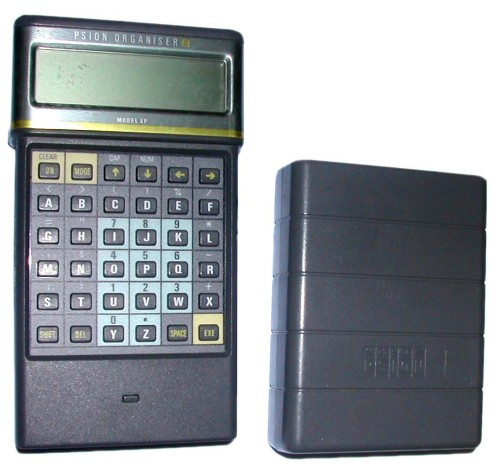
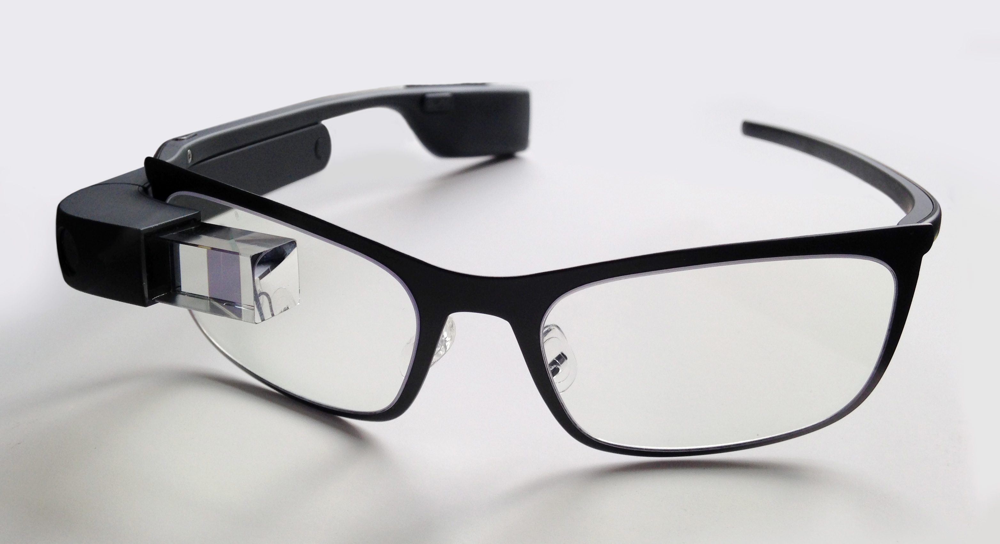

Mobile computing, which we today think of as portable things like smartphones,
laptops, and tablets, wasn’t always small and convenient to carry. An example
of this is the first pocket calculator, the Handy LE-8OA from Busicom made in 1972.
The Handy LE-8OA was only a four function calculator yet is the same size as some
modern scientific calculators (Tout, Vin).
|
|
| Busicom LE-8OA made in 1972 |
There was also the Electronic Wizard
which was a toy for children made in the late 70’s and early 80’s. It had 6 games
on it, so it could also be referred as one of the first mobile gaming devices.
Furthermore, even though the Electronic Wizard was called a toy, it was one of
the first products that slightly resembled a modern day laptop (IDG UK, comp).
|
| Merlin Electronic Wizard made in 70's-80's |
However, the actual first laptop was the Osborne 1. It was made to be carried,
but weighed 23.5 pounds. The Osborne 1 had a handle and a keyboard that folded
up for when you wanted to carry it (IDG UK, comp),yet a laptop nowadays usually
weighs around only 5 pounds (Marius, ICT).
|
| The Osborne 1 made in 1981 |
Another example of the development of
mobile computing is the Psion. It was known as the first handheld computer, or a
smartphone that can’t make calls, allowing the user to access a calendar and calculator
from anywhere (IDG UK, comp).
|  |
| The Psion made in the 1980's |
However, a phone from the 21st century could provide
almost anything one would like, including games and more advanced features than those
available on the Psion. The Apple iBook from 1999 was the first laptop to carry a Wi-Fi
card, which led to the large rise in the creation of products with wireless internet
connectivity (IDG UK, comp).
Laptops got another amazing upgrade in 2002, when the Acer
TravelMate TM-100 laptop/tablet hybrid was introduced. The Acer was the first laptop
tablet hybrid that could turn its screen 180° and fold back on the keyboard, doubling
as a tablet that worked with a stylus (IDG UK, comp). Products such as the ASUS
Chromebook and the HP Pavilion have continued the idea of a hybrid such as the Acer,
except instead of the screen turning it now varies from detaching from the keyboard or
just folding back. Most laptop tablet hybrids are also now touch screen, and styluses
are optional.
|
| Acer TravelMate TM-100 made in 2002 |
One of the most talked about innovations nowadays is the Google Glass.
The Google Glass has taken ideas from science fiction of advanced technology and multi
use glasses and made them a reality. The plans for these new glasses have been
set back, but Google is still planning on creating them and focusing on the
applications for technology. However, instead of doing so for everyday customers,
they will be focusing on business like environments
(IDG UK, comp).
|  |
| Google Glass not yet finalized |
This development of mobile computing may seem like it took a while,
but creations such as the Handy LE-8OA from 1972, the Osborne 1, and
the Acer were ahead of their time, and wouldn’t be further improved until years later.
The Handy Le-8OA was smaller than any calculator at the time (creating the concept of
convenience), the Osborne 1 was the first computer that was meant to be carried around
(creating the concept of portable devices), and the Acer was one of the first laptop
tablet hybrids (creating the concept of multi-use laptops or tablets).